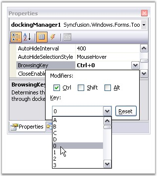

DockingManager lets you specify the keyboard key combinations, to tab through the docked controls. The property BrowsingKey of the docking manager, provides modifiers like CTRL, SHIFT, ALT Keys and keys like A, B, C, 0, 1 etc., User can also provide a combination of modifiers and the keys. Example "CTRL + 0", as shown in the image below.

Figure 65: Browsing Key set for the Docking Manager
 Note: Before we set this property for
docking manager, we have to set TabStop property to true and TabIndex property
with the appropriate value. Otherwise its BrowsingKey property will not
work.
Note: Before we set this property for
docking manager, we have to set TabStop property to true and TabIndex property
with the appropriate value. Otherwise its BrowsingKey property will not
work.
|
DockingManager Property |
Description |
|
Browsing Key |
Determines the value of the key which can be used to tab through the docked controls. |
|
DockedControl Property |
Description |
|
TabStop |
Indicates whether TAB key can be used to focus the control. |
|
TabIndex |
Determines the index in the tab order that this control will occupy. |
These properties can be set through code by using the below code.
|
[C#]
this.dockingManager1.BrowsingKey = ((System.Windows.Forms.Keys)((System.Windows.Forms.Keys.Control | System.Windows.Forms.Keys.D0))); this.treeViewAdv1.TabStop = true; this.treeViewAdv1.TabIndex = 0; |
|
[VB.NET]
Me.DockingManager1.BrowsingKey = CType((System.Windows.Forms.Keys.Control Or System.Windows.Forms.Keys.D0), System.Windows.Forms.Keys) Me.TreeViewAdv1.TabStop = True Me.TreeViewAdv1.TabIndex = 0 |